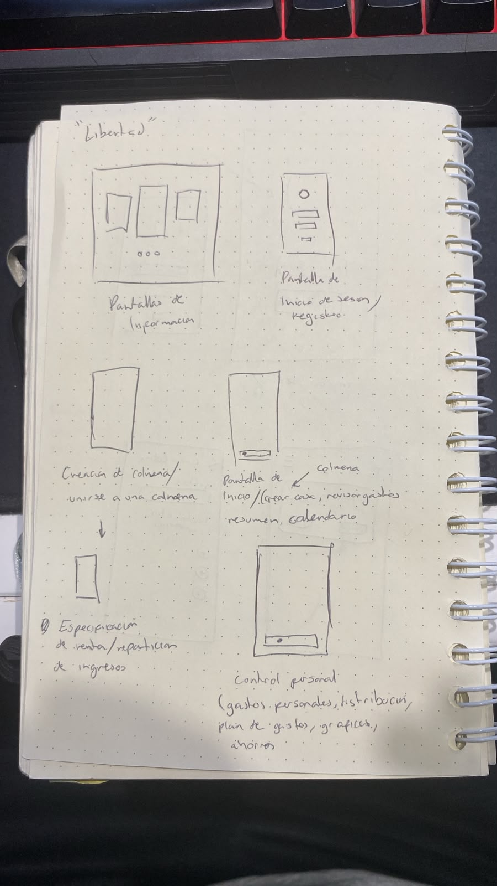
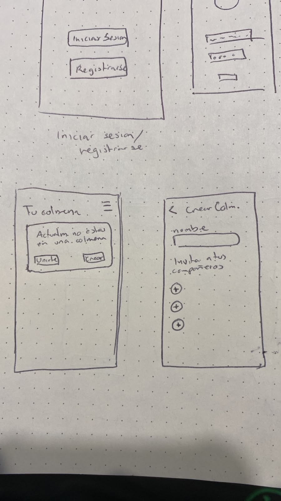
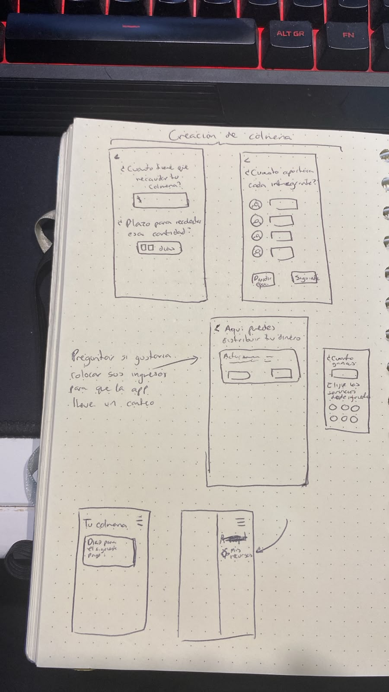
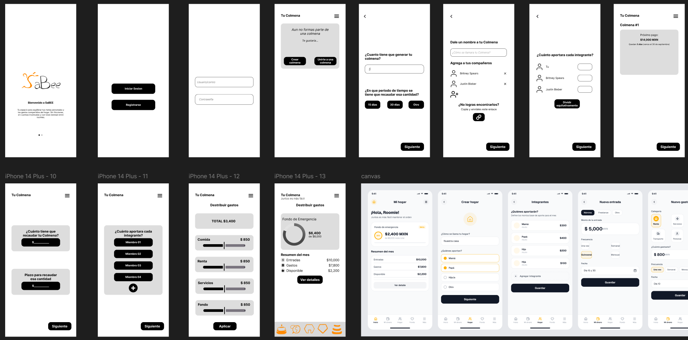

Inicio
Bienvenido al blog. Aquí irá el contenido principal de la sección de inicio.
Procesos
¿Qué problema nos interesa resolver?
Las personas de 18 a 29 años con empleos no regularizados o con bajos ingresos enfrentan dificultades para financiar una vivienda de manera independiente, lo que las lleva a compartir vivienda y gastos por necesidad económica y no por preferencia. Esta convivencia obligada introduce una carga adicional de gestión financiera informal —cálculo, cobro y seguimiento de gastos compartidos— que genera imprevisibilidad en su presupuesto personal y dificulta sostener hábitos de ahorro constante.
¿Por qué nos interesa resolverlo?
Nos interesa resolver esta problemática porque atiende una consecuencia directa y medible de una condición estructural que ya afecta a un sector amplio de la población joven en México: el encarecimiento sostenido de la vivienda ha convertido la convivencia y el gasto compartido en una estrategia de supervivencia económica, no en una preferencia de vida. Esta condición no es marginal ni temporal —siete de cada cien hogares en el país son corresidentes, y casi la mitad de ellos está conformada por personas jóvenes— y trae consigo una carga añadida que hasta ahora no tiene una herramienta dedicada a resolverla.
Usuario
Adultos jóvenes de 18 a 29 años, con empleos no regularizados o con bajos ingresos que comparten vivienda con otros jóvenes no familiares por necesidad económica y no por preferencia.
Justificación
Los adultos jóvenes que comparten vivienda por necesidad no cuentan con propiedades propias y, en ocasiones, ni siquiera cuentan con el sustento necesario para independizarse por sí solos, por lo que una herramienta que facilite la gestión de sus ingresos y gastos parece ser necesaria.
-Falta de independencia: "Siento que no puedo tener un espacio propio o tomar desiciones completamente autonomas".
-Presión económica: "Me preocupa constantemente por llegar a fin de mes y cubrir la renta, mis servicios, comida y transporte".
-Dificultas para ahorrar:"Aunque tenga ingresos, siento que el dinero desaparece rápidamente y no puedo generar un fondo de emergencia".
-Sentirse incómodo al hablar de dinero.
-Que los demás no tengan la misma organización financiera.
-No saber con certeza quién pagó, quién falta y sus cantidades.
-Incertidumbre financiera: "No se con claridad cúanto puedo gastar sin comprometer mis necesidades básicas".
-Dependencia de otras personas: "Tener que que recurrir a familiares, pareja o compañeros de cuarto para cubrir ciertos gastos".
-Sentir que puede haber injusticias.
-Falta de control sobre sus gastos: " No llevo un registro completo claro de en que qué se va mi dinero".
-Complicado o casi imposible planear a largo plazo: "Me cuesta tener metas como mudarme, comprar una propiedad o viajar, se sienten inalcanzables".
-Falta de estabilidad económica.
-Dificultad para cubrir todos sus gastos mensuales.
-Incapacidad para ahorrar de manera constante.
-Dependencia económica de familiares, pareja o compañeros de vivienda.
-Falta de control y organización sobre sus ingresos y gastos.
-Estrés al momento de pagar renta, servicios y necesidades básicas.
-Dificultad para dividir correctamente los gastos compartidos.
-Miedo a no poder afrontar gastos inesperados.
-Frustración por no poder independizarse.
-Sensación de estancamiento económico.
-Son jóvenes que cuentan con ingresos propios, pero no lo suficientemente altos como para pagar una vivienda por sí solos.
-Están comenzando su vida adulta, por lo que no tienen mucha experiencia sobre cómo manejar sus gastos.
-Las decisiones económicas suelen resolverse de manera espontánea:“Paga tú este mes y yo pago el siguiente.”“Paga tú el súper y yo pago el siguiente.”Entre otros acuerdos que pueden no ser equitativos.
-El usuario busca una vivienda y un estilo de vida dignos y costeables.
-La falta de educación financiera y el estado actual del mercado inmobiliario dificultan a los jóvenes el pago de la renta, así como el orden y la equidad en los pagos de la vivienda.
Investigación
Contenido relacionado con la investigación del proyecto.
Resultados
Contenido relacionado con los resultados obtenidos.
Prototipado
Prototipos realizados a lo largo del desarrollo del proyecto.
1er Prototipo
Descripción del prototipo
Los 3 tanques
Usuario
Como el proyecto está en etapa de desarrollo conceptual…
Como el proyecto está en etapa de desarrollo conceptual y aún no se han realizado pruebas de acercamiento el diseño se articuló a partir de una hipótesis de usuario basada en la investigación inicial y referentes secundarios. Se plantea que el usuario objetivo —jóvenes adultos en transición a la independencia habitacional y financiera en México— tiene disposición a usar herramientas digitales de gestión, siempre que no impliquen un costo cognitivo alto ni una verificación estricta. Parte del supuesto de que este perfil busca tener control sobre su dinero y su convivencia, pero rechaza las interfaces rígidas, las hojas de cálculo complejas o las dinámicas de cobranza invasivas entre roomies o familiares. Bajo esta premisa, la hipótesis sostiene que: Adopción gradual: La herramienta se aceptará mejor si permite iniciar con un solo módulo (el de necesidad más inmediata) en lugar de exigir la configuración de un sistema completo desde el inicio. Mediación neutral: Usar la interfaz para recordar pagos o asignar tareas reducirá la fricción interpersonal al pasar la responsabilidad del aviso a la aplicación y no a la persona. Motivación visual: El hábito del ahorro se sostendrá solo si el seguimiento es visual y está ligado a metas personales a corto plazo, evitando la apatía que provocan los métodos de ahorro tradicionales. Este planteamiento sirve como guía actual de trabajo y está pendiente de comprobación, por lo que se ajustará o corregirá cuando se realicen las pruebas con prototipos y usuarios en las siguientes etapas.
Diseño
El diseño de esta propuesta traduce las dinámicas…
El diseño de esta propuesta traduce las dinámicas teóricas en decisiones de interfaz y experiencia de usuario concretas, estructuradas en cuatro pilares de diseño: 1. Arquitectura modular y onboarding flexible El flujo de entrada responde al ritmo de cada usuario. Al permitir activar de forma libre una, dos o las tres funciones principales, la aplicación evita la saturación inicial y respeta la autonomía de uso. En lugar de imponer una estructura rígida, la pantalla de inicio permite adaptar la herramienta al nivel de independencia financiera y habitacional que la persona necesita gestionar en su momento actual. 2. Cognición distribuida y reducción de fricción social El módulo de Acuerdos y Convivencia funciona como un espacio para hacer visible lo que normalmente queda implícito en el hogar. Para evitar el desgaste de las discusiones verbales sobre dinero o limpieza, la interfaz sustituye la confrontación directa por un tablero claro: tareas con rotación automatizada, desglose de cuentas compartidas en formato "quién debe a quién" y opciones de verificación como el registro fotográfico. De este modo, el seguimiento de las reglas deja de depender de la memoria o la insistencia personal y pasa a un acuerdo visual común. 3. Visualización de información y bajo desgaste cognitivo El módulo de Proyección de Gastos simplifica el seguimiento del dinero mediante un dashboard semanal. En lugar de presentar tablas complejas o listas infinitas de transacciones, la pantalla muestra datos directos: saldo disponible en el periodo, consumo acumulado y una estimación del cierre de semana mediante gráficas diarias. Esta síntesis gráfica elimina la necesidad de hacer cálculos manuales constantes, facilitando una lectura rápida de la situación financiera. 4. Diseño visual y progresión de metas La dirección de arte basada en tonos verde esmeralda con acentos en azul y turquesa busca alejarse de la estética fría o estresante de los sistemas bancarios tradicionales, transmitiendo estabilidad y avance. Esto se complementa con la Banca de Ahorros, donde el progreso se representa mediante barras visuales asociadas a metas concretas (compras, viajes o fondos de reserva), cambiando la sensación de restricción por un seguimiento claro del avance hacia un objetivo. En conjunto, este planteamiento técnico explica cómo la estructura por módulos, la claridad de los desgloses y el manejo visual trabajan a la par para convertir los requerimientos del proyecto en una herramienta funcional y fácil de usar.
Teoría
Esta propuesta se apoya en tres cuerpos teóricos distintos…
Esta propuesta se apoya en tres cuerpos teóricos distintos, cada uno explicando una parte del problema que la aplicación busca resolver. Bourdieu (1986) plantea el capital social como los recursos que se obtienen por pertenecer a una red de relaciones y reconocimiento mutuo. Dentro del hogar familiar ese capital ya existe, pero no resuelve por sí solo la fricción del dinero compartido. Gouldner (1960) ayuda a entender por qué: distingue entre una reciprocidad difusa, propia de los vínculos familiares, y una reciprocidad concreta, propia de una transacción regular. Sahlins (1972) va más allá y separa la reciprocidad generalizada del núcleo familiar de la reciprocidad equilibrada que rige relaciones más distantes. La aportación económica de un hijo o hija adulto queda atrapada entre estas dos lógicas: la familiar, donde "no se lleva la cuenta", y la económica, que exige precisión y puntualidad. De ahí surge la ambigüedad central del usuario: no sabe si lo que aporta es una obligación o un gesto voluntario. El módulo de acuerdos y convivencia responde justo a esto, volviendo explícito y sin necesidad de confrontación directa algo que normalmente se queda implícito: quién debe qué, cuándo y con qué reglas. La rotación automática de responsabilidades y el asignador de gastos compartidos sacan ese acuerdo de la memoria de cada persona y lo convierten en algo visible. Arnett (2000) describe la adultez emergente como la etapa entre los 18 y 29 años donde se ensaya la vida adulta sin haber consolidado todavía hábitos propios, con frecuencia sin haberse independizado por completo de la familia. Quienes atraviesan esta etapa con más recursos pueden equivocarse y corregir; el usuario de este proyecto no tiene ese margen, y termina improvisando acuerdos de convivencia sin experiencia previa. Esto es lo que justifica que la herramienta parta de cero: no asume que el usuario ya lleva un control financiero ni conoce un sistema de gestión, y por eso permite activar solo la función que necesita en ese momento. El nivel psicológico se sustenta en la teoría de la escasez de Mullainathan y Shafir (2013). Su argumento central es que la escasez económica no solo limita recursos, también ocupa la capacidad mental disponible para pensar en el futuro, produciendo un efecto túnel que prioriza lo urgente sobre lo importante. Un dashboard que muestre en tiempo real cuánto dinero queda disponible, cuánto se ha gastado y cuál será el saldo al cierre de la semana no es un lujo visual: reduce la carga de tener que calcular todo eso mentalmente, justo la capacidad que la escasez consume. El módulo de ahorro se apoya en el trabajo de Thaler y Sunstein (2008) sobre nudges, empujones conductuales de bajo costo que cambian decisiones sin restringir opciones. Carballo y Girbal (2021) encontraron, estudiando fintech en América Latina, que los recordatorios automáticos funcionan particularmente bien para que el ahorro no quede pospuesto frente a otras urgencias del día a día, el mismo efecto túnel descrito antes. Por eso el ahorro dentro de la app no depende de que el usuario se acuerde de apartar dinero: se automatiza un porcentaje del presupuesto sobrante y se conecta a metas visibles y concretas. Ninguna de estas funciones pretende resolver la causa económica estructural del problema, algo que evidentemente está fuera del alcance de una aplicación. Lo que sí puede hacer el diseño es intervenir donde realmente tiene margen: la ambigüedad social de aportar dinero en casa, la carga mental que impone la escasez, y la dificultad de sostener el ahorro sin un empujón externo.
Fotografías y bocetos




Reto de diseño
¿Cómo podríamos diseñar una herramienta que reduzca las fricciones en la vivienda compartida mientras fortalece la salud financiera de los adultos jóvenes?
Insights Valiosos
"Los involucrados conocen las cifras exactas y las fechas de pago, pero aun así evaden las conversaciones financieras y caen en incumplimientos."
"Los jóvenes entienden el valor racional de llevar un presupuesto, pero abandonan las aplicaciones financieras porque la captura de datos es tediosa, moralista y no ofrece gratificación frente al hábito de consumo inmediato."
"Guardar dinero sin un objetivo tangible provoca que la disciplina falle a la tentación del gasto diario."
"El usuario prefiere asumir una pérdida económica personal o tolerar faltas antes que cobrar, porque teme ser visto como conflictivo, interesado o poner en riesgo la relación con su compañero."
"Préstamos 'a costo cero' o sin intereses suele desvalorizarse, propiciando el incumplimiento de pago. El compromiso financiero requiere cierta responsabilidad o costo percibido para ser respetado."
"El mayor gasto monetario no viene de los gastos fijos. El mayor gasto viene de los gastos hormiga."
"La gente joven desconoce la proporción real de su dinero."
"Los conflictos graves en una vivienda rara vez detonan por un problema mayúsculo inmediato; comienzan con faltas pequeñas, postergaciones de pago cotidianas o desatención de tareas compartidas."
"Al mudarse juntos, las personas definen reglas iniciales o asumen las costumbres que aprendieron en sus casas familiares, pero rara vez se sientan a actualizarlas."
"Las aplicaciones de gastos fallan con jóvenes debido a su apariencia de una hoja de cálculo."
Mapa de conexiones
Problema
Contexto
Usuario
Insights
Reto de diseño
Propuesta
Soporte
Video prototipo 1
Video prototipo 2
Cronograma
Cronograma de actividades a seguir.
Nosotros
Víctor Hugo
Información sobre esta persona: su rol en el proyecto, experiencia o lo que quieras destacar.
Rodrigo Ramos
Información sobre esta persona: su rol en el proyecto, experiencia o lo que quieras destacar.
Fernando Del Río
Información sobre esta persona: su rol en el proyecto, experiencia o lo que quieras destacar.
Contacto
Datos de contacto o un formulario para comunicarse.